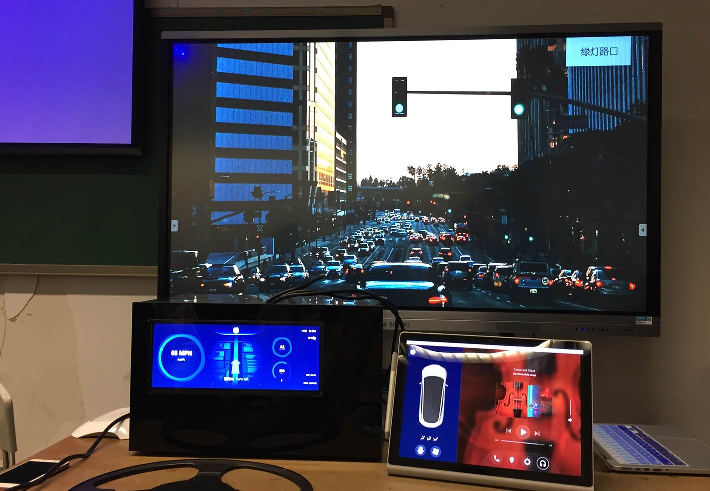
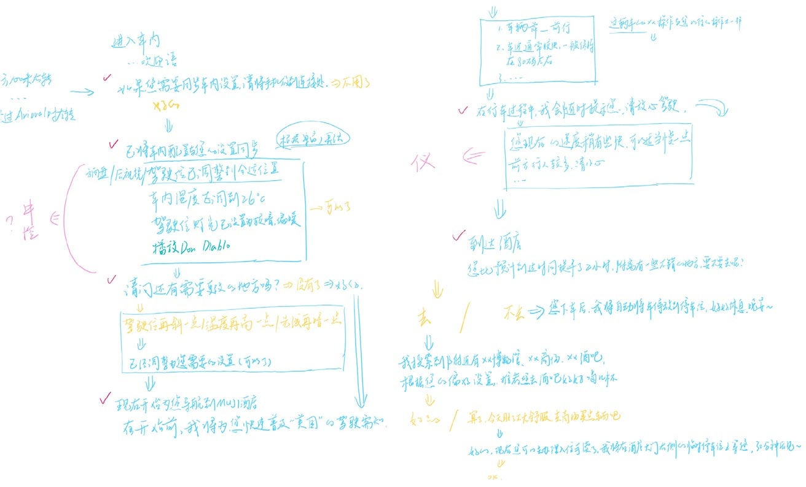

Voice Assistant for the Travelers of Tomorrow
Mar 2018 – Apr 2018
Academic Project | Tsinghua University, China
Skills
Voice User Interface Design, UX/UI, User Research
Role
UX/UI designer, user researcher
In the big cities of China where people accumulated wealth at an unprecedented rate, more and more people choose private road trips for overseas travels instead of a large group guided tours. This has driven the demand for rental cars in countries such as the United States. However, the group still remains underserved. Few tools exist to help solve the problems faced by overseas travelers, including the difficulty in route planning, locating rental car agencies, and unfamiliarity of traffic rules.
Design a tool to help overseas self-driving travelers quickly get familiar with the local situation and arrange trips when they arrive, to reduce anxiety about unfamiliar environments and get the best travel experience.
Milla is an intelligent voice assistant design for cars. Through planning intelligent itineraries and emotional driving assistance, Milla (the voice assistant) helps tourists driving overseas to become familiar with local conditions and calmly manage their itinerary to reduce their anxiety towards unfamiliar environments and obtain the best travel experience.
48.8%
0-39 years old
21.7%
20-29 years old
We searched for relevant research reports and learned that in 2016, the age distribution of overseas self-driving users was mainly 48.8% in the age of 30-39, followed by 20-29 years old, accounting for 21.7%[1].
Therefore, we conducted user interviews with 8 users in this age group who have had experience in self-driving tour in the United States. We asked them about their overseas self-driving experience, what difficulties they encountered, and how to solve them.
[1] White Paper on China's Internet Rental Car Rental Industry 2017[EB/OL]. Analysys International, 2017.
Before the trip
Arrival

During the trip
Due to the scattered information on the ticketing of the ticket hotel, the repeated operation time was unfamiliar with the overseas environment and it was difficult to specify the appropriate itinerary.
Due to the scattered information on the ticketing of the ticket hotel, the repeated operation time was unfamiliar with the overseas environment and it was difficult to specify the appropriate itinerary.
Users are uncomfortable with overseas traffic rules and driving styles, which is prone to tension and anxiety.
When encountering the scenery along the way, it is often a glimpse of the flowers, sometimes passing through the places of interest, but do not understand.
After a hard day's journey, it is often tedious to confirm that the next day's itinerary.
According to our customer research, we believe that they need an intelligent assistant to provide suitable suggestions to help them better plan for trips. Additionally, this assistant should use emotional voice to comfort users and ease their anxieties when they driving.
The assistant has two phases:
Reservation and Departure Phase - App on mobile phones
Gather information:
Airfare, accommodation, booking.
Recommend itinerary:
Recommend attractions and scheduling arrangements based on the travel information and user preference.
Traveling Phase - Voice Assistant on car
Car setting:
Adjust the user’s preferred settings in every rental car intelligently.
Driving tips:
Provide local driving and road information, give warnings when appropriate and explain different traffic signs.
Introduce attractions:
Introduce interesting sites vividly and concisely that passed by during driving.
Schedule itinerary:
Recommend nearby attractions and dining information, adjust scheduling flexibly, and check for the next day's itinerary.
Using a whiteboard, we quickly wrote down the possible dialog scripts that the user and the voice assistant may have during the traveling phase and then sorted out the conversation functional groups accordingly.
Chatter:

The GUI complements the voice interaction to express the information more completely. For example, maps, traffic signsand other graphic information cannot be completely described by voice and should appear synchronously with voice.
Dash Integration Module
When driving, the users mainly focus on the road, so we believe that only the most important information should appear in the DIM, such as navigation, driving warnings, and traffic signs.
Milla's appearance is always displayed in the upper middle of the DIM, and the new prompt displays below Milla.
Center Panel
The secondary information should appear in the Center Panel, such as car settings, driving tips, and schedule itinerary.
The left side of the panel is used to display the conversation, or to display the state of the car when there is no conversation.
When in the conversation state, the left side transforms into the visual display of the dialogue, and Milla's appearance moves from the upper left corner to the middle, which is more conspicuous.
The icons in the dialogue add the non-verbal layer to the conversation.
When in the Schedule itinerary state, the right side of the panel transforms into a map.
In the visual display of the dialogue, To differ the user's dialogue and Milla's dialogue, I make the thickness and transparency of the font different.
Using the wearable device to analyze the user's attention, emotion and workload of brain waves when the user uses prototypes.
In the test, we used a DIM tester, using a laptop as the Center Panel, and using a large-size display to simulate the road situation by displaying relative picture. A person controls the interface, the other person plays the Voice Assistant and talks to the user based on the Dialogue script written in advance.
Test 1